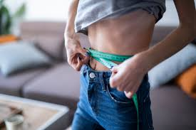
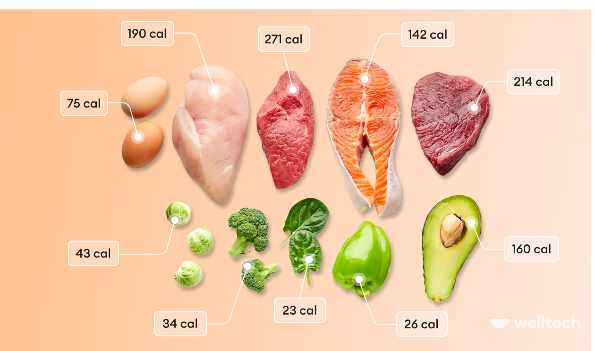
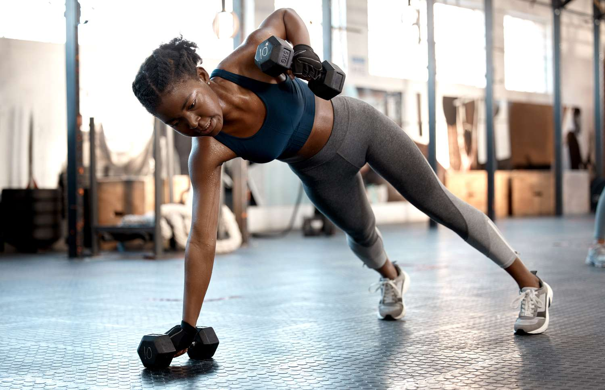
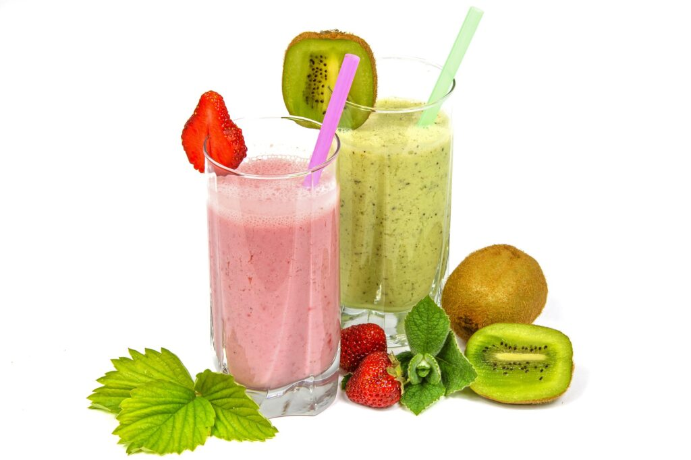
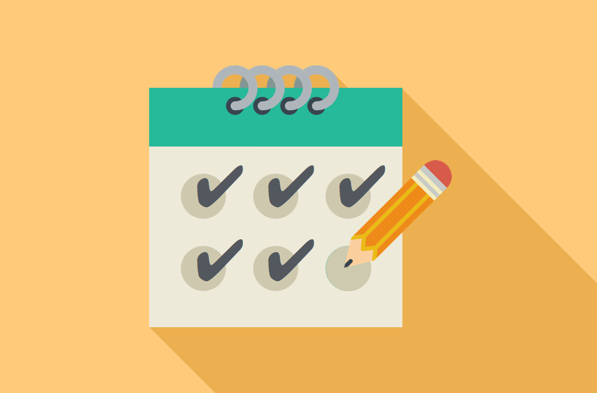

How to Gain Weight Healthily & Reach a Normal BMI
If you're underweight (BMI below 18.5), it’s essential to gain weight in a healthy and balanced way—not just by eating more but by focusing on nutrient-rich foods, strength training, and lifestyle changes.
Before gaining weight, it’s important to know why you’re underweight. Some possible causes include: High metabolism, Poor diet, Medical conditions, Stress & mental health among others.
Tip: If you're unsure, consult a doctor or dietitian before making drastic changes.

Eat More Calories Than You Burn (Caloric Surplus)
To gain weight, you need to consume more calories than your body uses. Eat 5-6 small meals a day instead of 2-3 big ones. Eat calorie-dense foods – Choose healthy, high-calorie foods, such as proteinous foods like eggs, chicken, fish, beef, tofu, and dairy, foods rich in carbohydrates like rice, oats, whole wheat bread, sweet potatoes, quinoa, healthy fats like avocados, nuts, olive oil, peanut butter, cheese.

Build Muscle with Strength Training
To gain healthy weight and not just fat, do strength training 3-4 times a week. The best exercises for weight gain include: Compound exercises, Bodyweight exercises, and Weightlifting
Tip: Pair protein-rich meals with workouts for better muscle growth.

Drink High-Calorie Shakes & Smoothies
If eating large meals is tough, drink your calories! Try these high-calorie smoothies: Peanut Butter Banana Shake and Avocado Power Shake
Tip: Avoid fizzy drinks or processed junk food — they might be high in calories but don’t support healthy weight gain.

Improve Sleep & Reduce Stress
Your body needs proper rest to build muscle and store energy. Aim for 7-9 hours of quality sleep every night. Avoid screens before bed—try reading or meditating instead. Keep a consistent sleep schedule.

Track Your Progress & Stay Consistent
Monitor your weight weekly – Aim for 0.5 to 1 kg (1-2 lbs) per week. Take progress photos – Sometimes visual changes happen before the scale moves! Be free to adjust as needed – If you're not gaining, increase calories or workout intensity.

Achieving a healthy weight requires a balanced approach that includes a nutritious diet, regular exercise, and lifestyle modifications.
Consulting with a healthcare provider or registered dietitian is advisable to tailor these recommendations to your individual needs.
For a comprehensive visual guide, consider watching the following video!